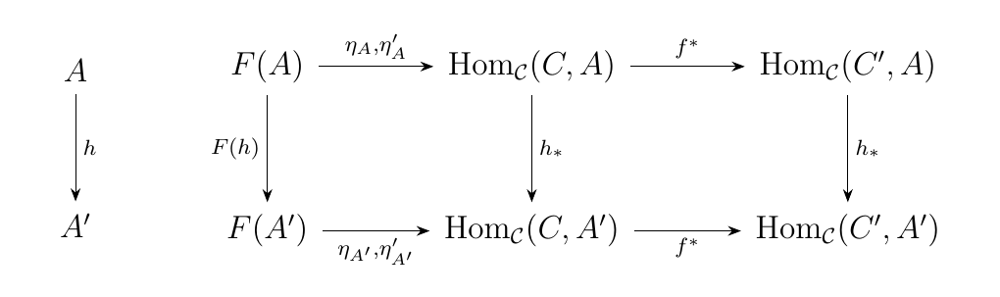
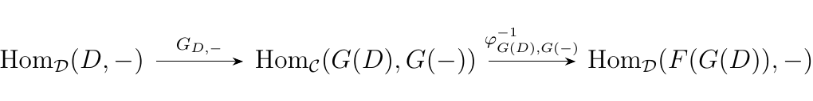
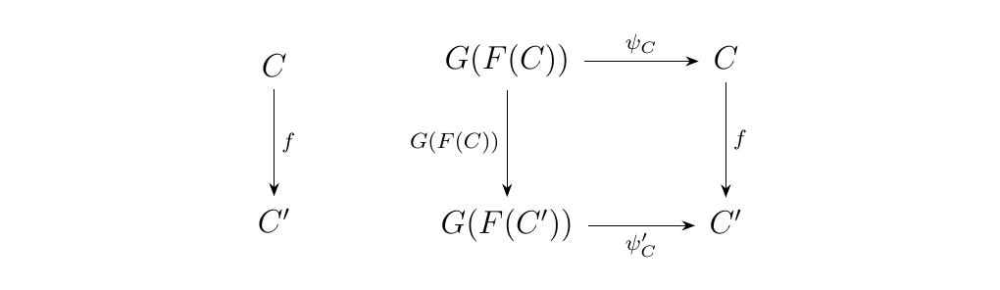
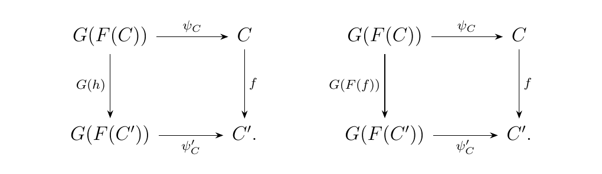

4.3. Equivalence of Categories
In an ideal world, if we have a category of which we are interested in, our goal would be to find an isomorphism between it and a category of which we understand very well. We then know that certain mathematical structures are invariant between transitioning between the two, so that we could better understand our desired category.
However, this is generally too much to ask for. Many categories which are constructed are constructed in such a way that they're not isomorphic to anything we're familiar with; if they were, then they probably wouldn't be interesting. Hence we have a more useful notion of equivalence between categories.
Let \(F : \cc \to \dd\) be a functor. We say that \(\cc\) is equivalent to \(\dd\) if there exists a functor \(G:\dd \to \cc\) and natural isomorphisms $\eta: I_\cc \to G \circ F $ and \(\epsilon: F \circ G \to I_\dd\).
In this case, we say both \(F\) and \(G\) are an equivalence of categories.
Let \(X\) and \(Y\) be sets, and regard them as discrete categories. Then a functor \(F: X \to Y\) is just a function between sets. In this case, to say that \(X\) and \(Y\) are equivalent is if there exists a functor (function!) \(G: Y \to X\) such that we have natural isomorphisms \(\eta_x: x \to G(F(x))\) and \(\epsilon_x: F(G(x)) \to x\). However, each category has nontrivial morphisms; hence we see that each of these must be identity morphisms so that
What this then means is that an equivalence of categories for sets is just a pair of invertible functions. That is, it gives rise to an isomorphism.
Since \(\eta, \epsilon\) are already natural transformations, this simply makes them natural isomorphisms. It turns out that the notion of equivalence is more useful than of an isomorphism. An isomorphism is just too much to ask, but equivalence does give us nice invariants too.
A adjoint equivalence between categories \(C\) and \(D\) is an adjunction \((F, G, \eta, \epsilon)\) where the unit and counit \(\eta\) and \(\epsilon\) are natural isomorphisms.
It turns our an adjoint equivalence is the same thing as an equivalence between categories. But before we move on, we prove a lemma and a proposition.
Let \(\cc\) be a category, and \(f: A \to B\) a morphism. Then \(f\) induces a natural transformation
Then \(f^{*}\) is a monomorphism if and only if \(f\) is an epimorphism, and \(f^{*}\) is an epimorphism if and only if \(f\) is a split monomorphism (that is, if and only if \(f\) has a left-inverse.)
\begin{description} \item[\(\bm{\implies}\)] Observe that \(\hom_{\cc}(C, -) \to \cc \to **Set**\) is a functor. Then \(f^*: \hom_{\cc}(C, -) \to \hom_{\cc}(C', -)\) is a natural transformation where \(f: C' \to C\). Now suppose \(\eta, \eta': F \to \hom_{\cc}(C, -)\), where \(F: \cc \to **Set**\) is a functor, are natural transformations. Then if \(f^*\) is monic,
Now let \(h: A \to A'\) be a morphism in \(\cc\). Then we have the commutative diagram
 where we denote \(\eta_A, \eta'_{A}\) on the arrow to signify the fact that both \(\eta_A, \eta_A'\) are morphisms from \(F(A)\) to \(\hom_{\cc}(C, A)\). Now let \(x \in F(A)\). Then
But if \(f\) is monic, then \(f^* \circ \eta_A(x) = f^* \circ'_A(x)\) implies that \(\eta_A = \eta'_A\). Hence we see that \(\eta_A(x) \circ f = \eta'_A(x) \circ f \implies \eta_A(x) = \eta'_A(x).\)
\item[\(\bm{\impliedby}\)] Now suppose \(f\) is epic. Then using the same notation as earlier, note that
Hence we see that \(f^*\) is a monomorphism. \end{description} Taking the dual of what we proved, we prove the second part of the lemma. Now we'll use this lemma in the theorem below, one which will be very useful.
Let \((F, G, \eta, \epsilon)\) be an adjunction between categories \(\cc\) and \(\dd\). Then \begin{description} \item[\(\bm{(i)}\)] \(G\) is faithful if and only if for each \(D \in \dd\), \(\epsilon_{D}\) is epic \item[\(\bm{(ii)}\)] \(G\) is full if and only if every \(\epsilon_{D}\) is split monic. \end{description} Therefore, \(G\) is full and faithful if and only if \(\epsilon_D\) is an isomorphism between \(F(G(D))\) and \(D\).
If \(G: \dd \to \cc\) is a functor, then we see that \(G\) itself becomes a natural transformation between the two functors:
Recall that we have an adjunction given by \(F, G\). Then there exists a bijection \(\phi\) where
Thus \(\phi^{-1}: \hom_{\dd}(C, G(D)) \to \hom_{\dd}(F(C), D')\). Moreover, if \(D\) is an arbitrary object, this becomes a natural transformation between the two functors:
Let \(C = G(D)\). Then we have the following sequence of natural transformations: \  Composing the natural transformations, we finally obtain a natural transformation \(\phi^{-1}_{G(D), G(-)} \circ G_{D, -} : \hom_{\dd}(D, -) \to \hom_{\dd}(F(G(D)), -)\). How is this natural transformation given? We can assign \(-\) as \(D\) itself, and see what happens when we consider the identity morphism \(1_D: D \to D\). In this case
by definition of the counit \(\epsilon_D\). Now we understand how this poorly-notated natural transformation works! In general, for and \(f: D \to D'\), we see that
Thus, we see that this natural transformation is in disguise; it's actually just \(\epsilon_D^*: \hom_{\dd}(D, -) \to \hom_{\dd}(F(G(D), -)\)! \begin{description} \item[\(\bm{(i)}\)] \begin{description} \item[\(\bm{\iff}\)] If \(G\) is faithful, then the natural transformation in equation (7) is one to one. This makes \(\epsilon_D^*\) a monomorphism. By the previous lemma, this holds if and only if \(\epsilon_D\) is epic for every \(D\) in \(\dd\).
\end{description}
\item[\(\bm{(ii)}\)]
\begin{description}
\item[\(\bm{\iff}\)]
On the other hand, if \(G\) is full, then this natural
transformation in equation (7) surjective. This makes
\(\epsilon_{D}^*\) an epimorphism, and by the previous
lemma, that holds if and only if \(\epsilon_D\) is a split monomorphism.
\end{description}
\end{description}
Let \(F: \cc \to \dd\) be a functor. Then the following are equivalent. \begin{description} \item[\(\bm{(i)}\)] \(G\) is an equivalence of categories \item[\(\bm{(ii)}\)] \(G\) is part of an adjunction \((F, G, \eta, \epsilon)\) where \(\eta, \epsilon\) are natural isomorphisms \item[\(\bm{(iii)}\)] \(F\) is full and faithful, and each object \(C\) is isomorphic to \(G(D)\) for some object \(D\). \end{description} Note that this theorem is symmetric; one could interchange \(G\) with \(F\), and then obtain the same exact results. \textcolor{MidnightBlue}{Thus, one way of stating this theorem is that \(\cc\) and \(\dd\) are equivalent as categories if and only if there exits full and faithful functors \(F: \cc \to \dd\) and \(G: \dd \to \cc\); or if and only if \(F, G\) form an adjoint equivalence.}
\begin{description} \item[\(\bm{(i) \implies (iii)}\)] Suppose we have an equivalence of categories given by \(F: \cc \to \dd\) and \(G: \dd \to \cc\), with natural isomorphisms
Let \(f: C \to C'\) be a morphism in \(\cc\). Then observe that the following diagram \  is commutative. In an equations, we have that \(f = \psi_C' \circ G(F(f)) \circ \psi_{C'}^{-1}\). Thus suppose that \(f_1, f_2: C \to C'\) are two morphisms such that \(F(f_1) =F(f_2)\). Then we get a pair of commutative diagrams, similar to the ones above, which translate into the equations
Then if \(F(f_1) = F(f_2)\), the above equations guarantee that \(f_1 = f_2\). Hence we see that \(F\) is a faithful functor. Since the statement is symmetric in both \(F\) and \(G\), we have also that \(G\) is faithful.
To show that \(F\) is full, suppose there exists a morphism \(h: F(C) \to F(C')\) for a pair of objects \(C, C'\). Let \(f = \psi_{C'} \circ G(h) \circ \psi_C\). Then we have the commutative squares \  and hence we have that \(G(h) = G(F(f))\). But since \(G\) is faithful, this implies that \(h = F(f)\). Hence we have that there exists a \(f': C \to C'\) such that \(h = F(f)\), so that \(F\) is full. Again, by symmetry, we have that \(G\) is full, as desired.
Now since \(\phi: G \circ F \cong I_\cc\), we see that every object \(C\) is assigned an isomorphism \(\phi_C: G(F(C)) \to C\). Hence every object \(C\) is isomorphic to some \(G(D)\) where \(D = F(C)\).
Similarly, since \(\psi: F \circ G \cong I_\dd\), we know that each object \(D\) is assigned an isomorphism \(\psi_D: F(G(D)) \to D\). Hence every object \(D\) is isomorphic to some object \(F(C)\) for \(C = G(D)\).
\item[\(\bm{(iii) \implies (ii)}\)] Suppose \((iii)\) holds. For any arbitrary object \(C \in \cc\), there exists an isomorphism \(\eta_C: C \to G(D)\) for some object \(D \in \dd\). Denote such an object as \(F_0(C)\). Now consider any other morphism \(g: C \to G(D')\). Then we have that \ is commutative. Now since \(g \circ \eta_C^{-1}: G(F_0(C)) \to G(D')\), and because \(G\) is full, we know that there exists a \(h: F_0(C) \to D'\) such that \(g \circ \eta_C^{-1} = G(h)\). To show that this is unique, suppose there existed another \(k: G(F_0(C)) \to G(D')\) such that \(g = k \circ \eta_C\). Then by the same argument, there exists a \(h': F_0(C) \to D'\) such that \(G(h') = k\). Furthermore, we'll have that
so that \(G(h') = G(h)\). However, since \(G\) is faithful, we have that \(h' = h\). Hence, \(h\) is unique!
Since \(h\) is unique, this implies that \(\eta_C : C \to G(F_0(C))\) is universal from \(C\) to \(G\). Since such a universal isomorphism exists for each object of \(C\), we have by Proposition 4.1 that there exists a functor \(F: \cc \to \dd\) with object function \(F_0(C)\) which is left adjoint to \(G\). Hence we have an adjunction \((F, G, \eta', \epsilon)\). However, since universal morphisms are unique, we see that \(\eta' = \eta\), so that \(\eta\), our unit, is a natural isomorphism.
Finally, observe that for any object \(D\), we have that
for our adjunction. Since \(\eta_{G(D)}\) is an isomorphism, we have that \(G(\epsilon_D) = \eta_{G(D)}^{-1}\). Sine \(G\) is full and faithful, we see that \(\epsilon_D\) must be an isomorphism as well.
Thus, in total, we have an adjoint equivalence \((F, G, \eta, \epsilon)\), as desired.
\item[\(\bm{(ii) \implies (i)}\)] This direction is clear, since an adjoint equivalence automatically establishes an equivalence of categories. \end{description} With \((i) \implies (iii) \implies (ii) \implies (i)\), we see that all of the conditions are equivalent.
Let \(R\) and \(S\) be rings and consider the categories \(R\)-Mod and \(S\)-Mod. Then there are two different "product" categories we can form: The categories \((R \times S)\)-Mod and \(R**-Mod**\times S**-Mod**\)
Next, we introduce some properties of equivalences.
Let \(F: \cc \to \dd\) be an equivalence of categories with the
corresponding inverse functor \(G: \dd \to \cc\). Let \(f: C \to
C'\) be a morphism in \(\cc\). Then
\begin{description}
\item[\((i)\)] \(f\) is a monomorphism (epimorphism)
if and only if
\(F(f)\) is a monomorphism (epimorphism)
\item[\((ii)\)] \(C\) is initial (terminal) if and only if \(F(C)\) is initial (terminal).
\end{description}
Consequently, we have that \(f\) is an isomorphism (a monomorphism and epimorphism) if and only if \(F(F)\) is an isomorphism. \textcolor{Red!90}{Note this is not generally true!} Additionally, we also have that \(C\) is a zero object (terminal and initial) if and only if \(F(C)\) is a zero object. Finally, observe that this proposition is symmetric, so that the same conclusions hold for morphisms and objects in \(\dd\) governed by \(G: \dd \to \cc\).
\begin{description} \item[\(\bm{(i)}\)] \begin{description} \item[\(\bm{\implies}\)] Suppose \(f: C \to C'\) is a monomorphism. Consider two morphisms \(g,h: D \to F(C)\) such that \(F(f) \circ g = F(f) \circ h\). By the previous theorem, we know however that there exists an object \(A\) of \(\cc\) such that \(D \cong F(A)\). Hence there exists an isomorphism \(\theta: F(A) \to D\). We then have the diagram: \ Note that \(h \circ \theta, g \circ \theta: F(A) \to F(C)\). Since \(F\) is full, we know that there exists morphism \(k, k': A \to C\) such that \(g \circ \theta = F(k)\) and \(h \circ \theta = F(k')\). Now observe that
However, since \(F(f) \circ h = F(f) \circ g\), we see that \(F(f \circ k) = F(f \circ k')\). However, since \(F\) is faithful, we have that \(f \circ k = f \circ k'\). But since \(f\) is a monomorphism, we have that \(k = k'\). Hence \(F(k) = F(k') \implies g \circ \theta = k \circ \theta\), and since \(\theta\) is an isomorphism, we have that \(h = g\). Therefore, \(F(f)\) is also monic.
\item[\(\bm{\impliedby}\)] Suppose \(f: C \to C'\) and \(F(f)\) is monic. Consider two morphism \(g, h: A \to C'\) in \(\cc\), and suppose that \(f \circ g = f \circ k\). Then \(F(f) \circ F(g) = F(f) \circ F(k) \implies F(g) = F(k)\), since \(F(f)\) is monic. However, \(F\) is faithful, so that \(g = k\). Hence \(f\) is monic as well. \end{description}
\item[\(\bm{(ii)}\)] \begin{description} \item[\(\bm{\implies}\)] Suppose \(C\) is initial in \(\cc\). Let \(D\) be an object in \(\dd\). Then observe that, since \(\cc\) and \(\dd\) are equivalent, there exists an isomorphism \(\theta: F(A) \to D\) for some object \(A\) of \(\cc\). Since \(C\) is initial, we know that there exists a unique morphism \(f_C: C \to A\). Hence \(F(f_C): F(C)\to F(A)\). We then have that \(F(f_c) \circ \theta : F(C) \to D\). Hence there exists a morphism from \(F(C)\) to \(D\).
Now suppose \(f_1, f_2; F(C) \to D\). Then \(\theta^{-1} \circ f_1, \theta^{-1}\circ f_2: F(C) \to F(A)\). Since \(F\) is full, we know that there exist morphism \(k_1, k_1: C \to A\) such that \(F(k_1) = \theta^{-1}\circ f_1\) and \(F(k_2) = \theta^{-1}\circ f_2\). However, since \(C\) is initial, we see that \(k_1 = k_2 = f_C\). Hence \(f_1 = f_2\), so that there is exactly one morphism \(f_1=f_2:F(C) \to D\).
Since \(D\) was an arbitrary object of \(\dd\), we have that \(F(C)\) is initial.
\item[\(\bm{\impliedby}\)]
Suppose \(F(C)\) is an initial object. Consider any
object \(C'\) of \(\cc\). Then since \(F(C)\) is initial, there exists a unique
morphism \(f: F(C) \to F(C')\). Since \(F\) is full, we
know that this corresponds with a morphism \(k: C \to
C'\) such that \(F(k) = f\). Hence we have a unique
morphism \(k: C \to C'\). And since \(C'\) was an
arbitrary object of \(\cc\), we have that \(C\) is
initial, as desired.
\end{description}
\end{description}
The proofs in which we proved \(f\) to be an epimorphism, and for \(C\)
to be a terminal object, are very similar. This proposition will soon be
generalized, but this gives us insight into how useful the concept
of equivalent categories truly is.